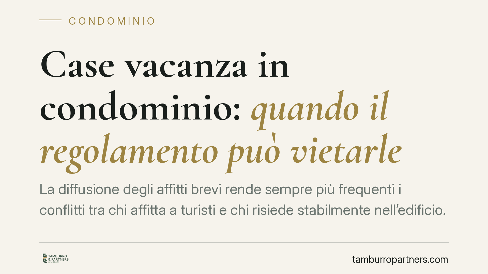

Case vacanza in condominio: quando il regolamento può vietarle
La diffusione degli affitti brevi rende sempre più frequenti i conflitti tra chi affitta a turisti e chi risiede stabilmente nell'edificio. La Cassazione ha chiarito un punto essenziale: il regolamento condominiale può vietare le case vacanza, ma solo a condizioni precise. Vediamo quali sono i limiti e cosa devono verificare i condomini prima di far valere un divieto.

Il contesto
L'attività di locazione turistica breve — le cosiddette "case vacanza" — incide sulla vita condominiale: maggiore andirivieni, uso intensivo di spazi comuni, ricambio continuo di persone estranee all'edificio. Da qui nascono le tensioni tra proprietari che destinano l'immobile agli affitti brevi e condomini che chiedono di limitare tale utilizzo.
La domanda ricorrente è una sola: il regolamento di condominio può vietare questa attività? La risposta della giurisprudenza è affermativa, ma subordinata a requisiti stringenti.
Inquadramento normativo
Occorre distinguere due tipi di regolamento condominiale. Il regolamento assembleare, approvato a maggioranza ai sensi dell'art. 1138 del Codice civile, può disciplinare l'uso delle cose comuni e la gestione dell'edificio, ma non può comprimere le facoltà di godimento del singolo proprietario sulla sua unità immobiliare.
Un divieto che incide sulla destinazione d'uso dell'appartamento — come l'esclusione delle case vacanza — rientra invece tra le limitazioni alla proprietà privata. Per essere valido deve essere contenuto in un regolamento di natura contrattuale: accettato da tutti i condomini (per approvazione unanime o per richiamo espresso negli atti di acquisto) e, per essere opponibile ai terzi acquirenti, trascritto nei registri immobiliari.
La Cassazione ha inoltre precisato un secondo requisito: la clausola deve essere esplicita e specifica. Non basta un divieto generico di destinare l'immobile ad "attività commerciali" o "a fini diversi da quello abitativo". Se le parti intendono vietare gli affitti turistici, la limitazione va formulata in modo chiaro e inequivocabile. In assenza di una previsione precisa, il divieto non può essere ricavato per via interpretativa a danno del proprietario.
Implicazioni pratiche
Per chi affitta a turisti, la conseguenza è che l'attività resta legittima salvo che esista un vincolo contrattuale espresso. Un semplice deliberato assembleare a maggioranza non è sufficiente a impedirla e può essere impugnato.
Per i condomini che vogliono limitare le case vacanza, la strada obbligata è modificare il regolamento contrattuale con il consenso di tutti i proprietari, oppure introdurre la clausola in sede di prima formazione dell'edificio. Si tratta di un passaggio difficile da ottenere quando manca l'unanimità.
Resta ferma, in ogni caso, la possibilità di intervenire non sull'attività in sé, ma sui comportamenti che ne derivano: rumori oltre soglia, uso improprio delle parti comuni, mancato rispetto degli orari di quiete. Su questi profili il regolamento assembleare e le norme sulle immissioni (art. 844 c.c.) offrono strumenti autonomi.
Cosa fare in concreto
- Verificate la natura del regolamento. Controllate se il vostro condominio ha un regolamento contrattuale accettato da tutti i proprietari o solo un regolamento assembleare approvato a maggioranza.
- Leggete la clausola nel dettaglio. Accertate se il divieto delle case vacanza è formulato in modo esplicito. Le clausole generiche difficilmente reggono in giudizio.
- Controllate la trascrizione. Per essere opponibile a chi ha acquistato successivamente, il vincolo deve risultare trascritto o richiamato nell'atto di compravendita.
- Distinguete il divieto dai disturbi. Se il problema sono rumori o uso scorretto delle parti comuni, agite su quel piano: non è necessario vietare l'attività per far cessare gli abusi.
- Documentate prima di agire. Prima di impugnare una delibera o di contestare un affitto, raccogliete regolamento, verbali assembleari e prova delle criticità concrete.
La materia richiede una valutazione caso per caso, perché l'esito dipende dal testo effettivo del regolamento e dalla sua trascrizione. Consigliamo di far esaminare i documenti prima di intraprendere iniziative assembleari o giudiziali, così da evitare delibere invalide o contestazioni infondate.
---
*Contributo informativo a cura di Tamburro & Partners - Avv. Giuseppe Tamburro. Non costituisce parere legale.*
Ogni condominio ha una storia a sé.
Se gestisci un'amministrazione e vuoi un confronto su una specifica questione condominiale, scrivi allo studio. Ti rispondiamo entro un giorno lavorativo.